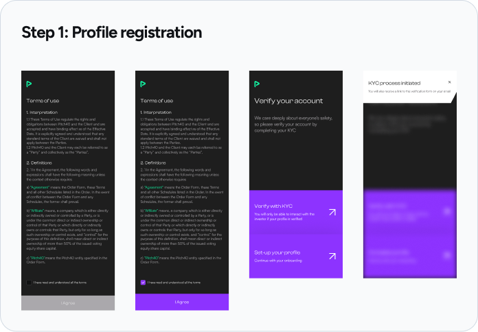
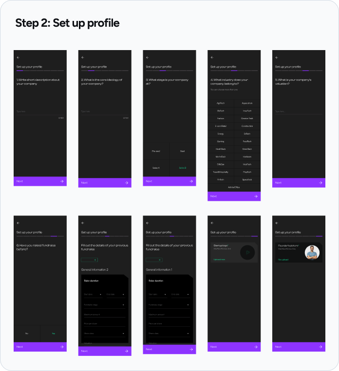
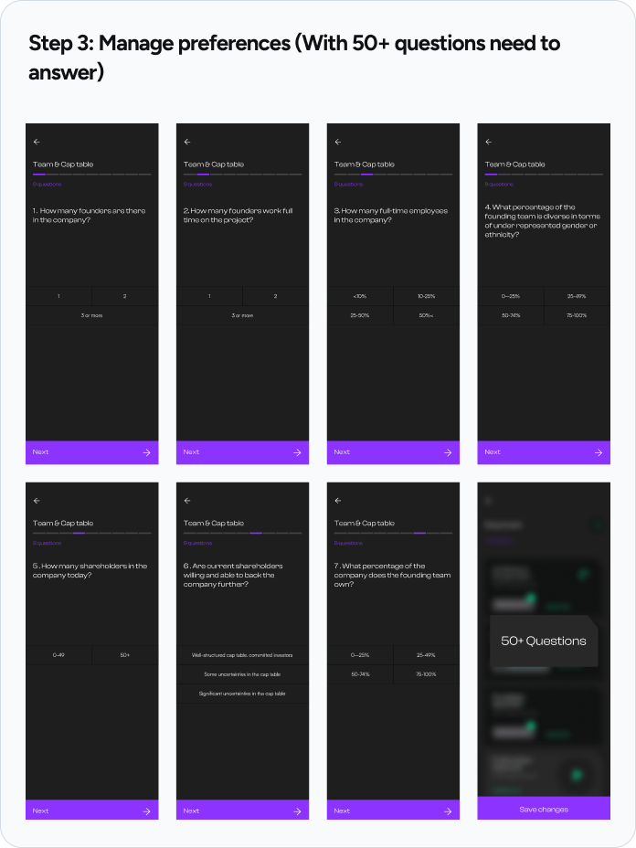
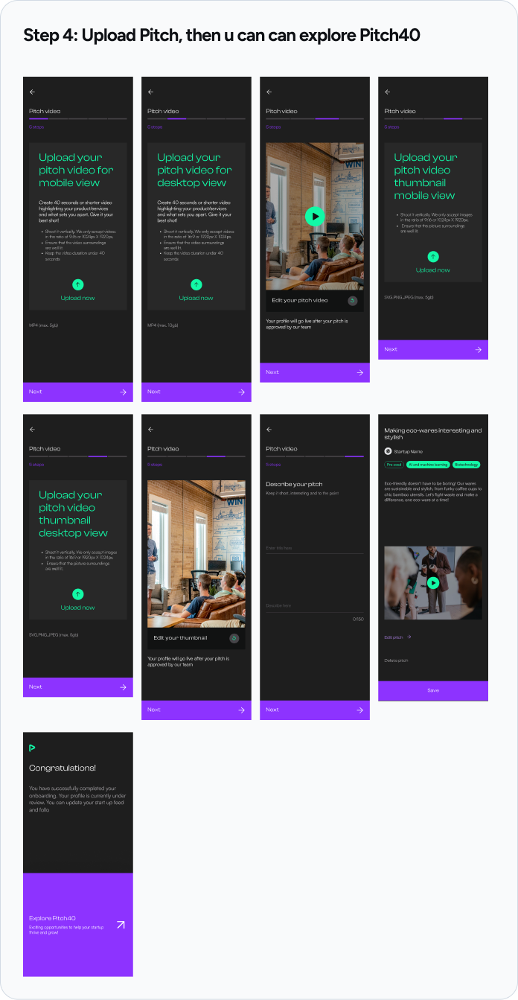
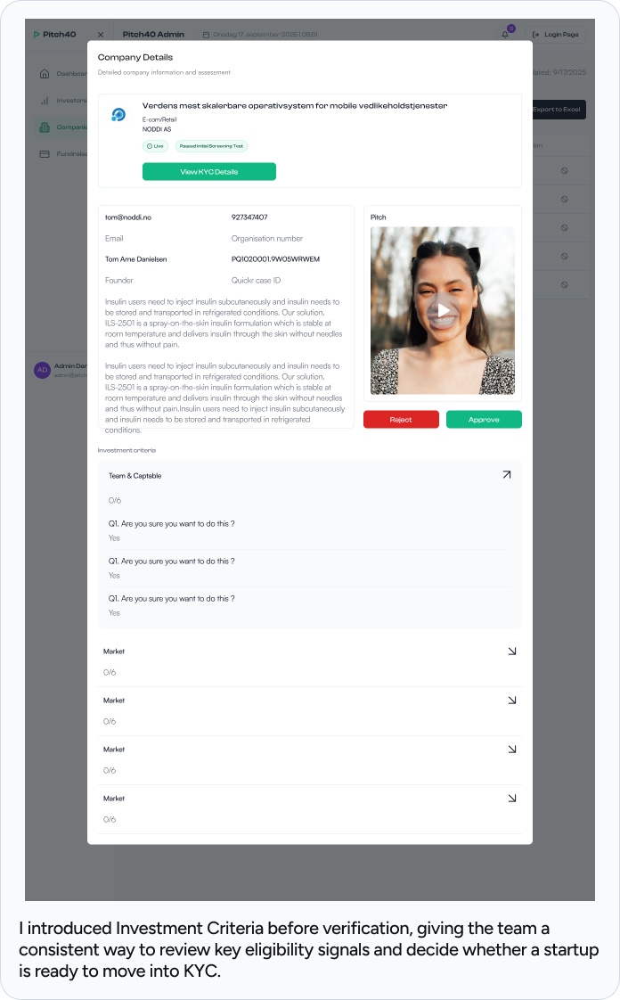

Bringing startups and investors together, without making the people behind it harder to manage.


Pitch40 connects startups raising capital with investors looking for opportunities. Startups create profiles, upload their pitch, complete verification, and try to get discovered. Investors browse startups, shortlist the ones that fit, and move toward conversations or investment decisions. Behind that, an internal team reviews companies, verifies KYC, and keeps the marketplace moving.
Investor evaluation time
Investment decision activity
Matched deal volume
Founder onboarding completion
The CTO did not ask for a redesign. He asked where the product was leaking.
That question made the work different from the start. I was not handed one neat feature brief. I had to understand where people were slowing down, dropping off, repeating work, or waiting for the team to move something manually.
I was still early in my design career at that time, so even understanding the data felt like part of the project. What does average time actually mean here? Where is the drop-off happening? What can the dev team track? Which number matters, and which one is just noise?
The CTO helped me understand what data we could get. The developers helped me understand what was technically possible. Slowly, the problem became less abstract: Pitch40 was not missing more screens. It was missing clearer decision moments.
It was not one big broken screen. It was a chain of small leaks.
Once we looked across the journey, the work stopped feeling like separate features. Each problem was connected to the next one.
They were not here to scroll. They needed to understand which startups deserved their next few minutes.
They wanted to reach the marketplace, but onboarding asked for too much before they saw value.
They wanted to reach the marketplace, but onboarding asked for too much before they saw value.
Verification and review needed clearer status, queues, and bulk control to keep the marketplace moving.
The product did not need one dramatic redesign. It needed four connected fixes at the points where decisions slowed down.
Matching: from endless feed to faster investor decisions.
The first leak was on the investor side. Investors were browsing startups through a feed, but the feed was not helping them decide. It showed cards, but it did not clearly show which startups were relevant to an investor's interests, stage preference, industry focus, or funding fit.
The feed was behaving too much like a content product. But Pitch40 was not Instagram. Investors were not there to kill time. They were there to make a call and leave with confidence.
The design question
The team already had useful information from both sides: startup stage, industry, funding ask, business model, traction, and investor preferences. The missing layer was not more data. The missing layer was a way to use that data to help investors prioritize.
The tricky part was deciding what the score should represent. If we tried to make the score answer “is this startup investable?”, we would be overclaiming. No interface can make that decision for an investor.
So I framed the match score around a smaller, more honest question: is this startup worth the investor's next few minutes?
Stage, industry, ticket fit, and the first pieces of information that help investors decide whether to open a profile.
Team, traction, documents, and deeper proof that belongs inside the startup profile, not in the first ranking layer.
The decision
I designed the matching layer as decision support, not as a final verdict. The feed could say “this startup is relevant to what you are looking for” without pretending to say “this startup is good enough to invest in.”
Evaluation time reduced by helping investors prioritize what to open.
Investment decisions increased after the decision layer improved.
State indicators: giving the feed memory.
While working on matching, another issue became obvious. The feed had no memory. Investors could open a startup, return later, and see the same card without knowing whether they had already viewed it, saved it, made an offer, or invested.
That meant they could re-evaluate the same startup from zero. In a B2B marketplace, that is not a small UI problem. It wastes attention.
The pushback
One suggestion was to hide startup cards after an investor had already viewed them. On paper, that sounded clean. Seen it once, remove it from the feed.
I pushed back because Pitch40 does not have infinite content. It has a limited startup pool. A viewed startup is not a finished video. An investor may open it, think about it, compare it, and come back later.
If we hid every viewed startup, we were not cleaning the feed. We were removing possible opportunities.
The decision
Instead of hiding cards, I designed state labels: Viewed, Wishlisted, Pending, and Invested. The goal was to help investors understand where they stood before opening a card again.
Onboarding: reducing friction before first match.
The next leak was on the founder side. Before a startup could get matched, it had to complete onboarding. But the flow was asking for too much too early.
Some information mattered, but not at the door. Founders were being asked to provide deeper details before they had even experienced the value of the platform.




The decision
I separated the essentials needed to create a profile from the deeper evidence needed for diligence. Founders could get to a first match sooner, then complete more detailed information with clearer context.
Founder onboarding completion
Time to first match
KYC and admin: making review faster behind the scenes.
The final leak was less visible to investors and founders, but it affected the whole marketplace. Pitch40 depends on trust. Companies need verification, but slow verification also slows the marketplace.
KYC and admin review needed clearer statuses, faster review actions, and better queue handling. When internal tools are unclear, the cost shows up as pending companies, support tickets, delayed founder progress, and slow decisions.
The decision
I introduced Investment Criteria before verification, giving the team a consistent way to review key eligibility signals and decide whether a startup is ready to move into KYC.
I also designed the admin experience around repeated decisions. The team needed queue-based review, clear filters, visible statuses, and bulk actions.

Admin queue clearance, up from 14/day
Review status visible to the people who need it
Each fix solved a different leak, but the product goal was the same.
Investors slowed down when the feed lacked relevance. They repeated work when the feed had no memory. Founders dropped when onboarding asked too much too early. Internal teams slowed down when review and verification required too much manual effort.
Investor evaluation time
Matched deal volume, up from $4.7M
Time to first match
Admin queue clearance, up from 14/day
This project changed how I think about B2B design.
Before Pitch40, it was easy to think of design as screens, flows, and UI quality. Those things still matter. But in a B2B product, design also has to find where the business process is slowing down.
Sometimes the problem is not visible on one screen. Sometimes it is between screens. A founder gets blocked before reaching value. An investor opens the same startup twice. An admin spends ten minutes on a decision that should take two.
Good B2B design is not only about making the product easier to use. It is about helping the right people make the right decisions faster, with enough context to trust what they are doing.